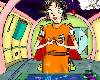
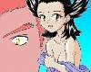
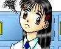

| ART | CREATOR | THUMBNAIL | RECOMMEND | TEXTS BY | |
| #21 | パイレー……ツ？
■ FEEDBACK |
広尾翔w / NEKO-DW さん |
 |
SF作品ですね！ どこかアメリカナイズされたマインドを感じるのは私だけでしょうか？ | ※現在、ストーリー募集中 (99/09/12) |
| #22 | カズヤの陰謀
■ FEEDBACK |
原田聖也 さん |
 |
原田さんが、格闘ゲームキャラ、ギャル化企画第一弾となる作品を寄せて下さいました。お題は……『鉄拳』！ というか、平八！ | ※現在、ストーリー募集中 (99/09/12) |
| #23 | 愁い
■ FEEDBACK |
みっしんぐ さん |
女の子の「動じてない」表情が素敵です！ セーラーが冬服なあたり、もう秋なんだなーとしみじみさせられますね。秋作品です。 | ことぶきひかるさん (99/09/24) |
|
| #24 | 小狼・女の子の図
■ FEEDBACK |
Ｓ羽丘 さん (Homepage) |
CCさくらの小狼クンですよッ！(興奮) 小狼クンがっ！ 雪兎さんの気を引くためにっ！ いま！ 華麗なる |
ことぶきひかるさん, Cindyさん (00/08/27) |
|
| #25 | 風雲ぺったんこ座り
■ FEEDBACK |
いしがき・てつ さん |
くはー！ 目からウロコが飛び出しそうな上手さです。日本の画壇に「ぺったんこ座り」という新たな潮流がいま生まれました。あと、うわばきポイント＋１。 | ことぶきひかるさん 猫野丸太丸さん (99/09/26) |
|
| #26 | 指輪のイタズラ
■ FEEDBACK |
ことぶきひかる さん |
ダブついた男服を着た女の子ですね（そのまんまや）。謎のリングの正体も気にかかるところ。 | ※現在、ストーリー募集中 (99/09/25) |
|
| #27 | サイコパワーな彼女
■ FEEDBACK |
みかん飴 さん |
格闘ゲームキャラ、第２弾。なんと、あの「ベガ美さん」が現実のものに！ ストIIのベガ(♀)ですよ。しかも美人！ こんなベガにだったらボコられてみた〜い！ | ※現在、ストーリー募集中 (99/09/25) |
|
| #28 | 酔っぱらい、ねぃちゃん！
■ FEEDBACK |
角さん |
タンクトップにトランクスとはまた男っぽさを感じさせる格好の彼女です。角さんのコメントに書いてある内容も面白いですね。 | ※現在、ストーリー募集中 (99/09/25) |
|
| #29 | C H A N G E
■ FEEDBACK |
午後の緑茶 さん |
大迫力美麗CG、現る!! もう美麗すぎてCG門外漢の私には「凄すぎる」としか形容できないっす。「ど、どうなってるんだ…?!☆％＠」みたいな表情も…クゥー！ | もぐりん さん (00/08/17) |
|
| #30 | 朝の恒例
■ FEEDBACK |
ことぶきひかる さん (Homepage) |
 |
カリスマ美少女の宿命ですね、これは。少年の心を持った少女が学園のアイドルになってしまうのは、森山塔大先生の「キはキノコのキ」以来のお約束なのです。 | 八重洲二世 (99/10/22) |
| ART | CREATOR | THUMBNAIL | RECOMMEND | TEXTS BY | |